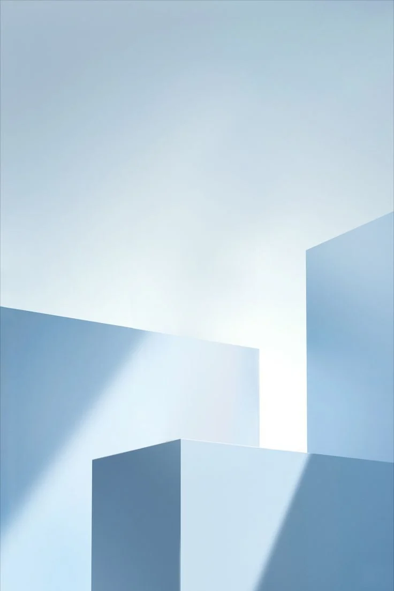

{{ l.num }}
{{ l.title }}
{{ l.desc }}

ÇÖZÜME GÖRE · SEKTÖRE ÖZEL ÇÖZÜMLER
Her sektörün kendi ürün ağacı, rotası, fire biçimi ve termin baskısı vardır. BSS, aynı yazılım metnini farklı sektör adları altında tekrarlamak yerine; sektörün gerçek üretim mantığını yapılandırmayla kurar. Standart karşılamadığında, çözüm mühendislikle tamamlanır.
SEKTÖR
{{ secDesc }}
SEKTÖREL ÜRETİM MANTIĞI
YAPILANDIRILAN SEKTÖREL ALANLAR
ÖNCE ÜRETİMİNİZİ ANLARIZ
Numunenizi, ürün ağacınızı ve akışınızı birlikte inceleriz. Sektöre özel hesap, rota ve kısıtları standart modülün üzerine yapılandırmayla kurar; gerektiğinde mühendislik geliştirmesiyle tamamlarız.
Sektörünüzü değerlendirelimNASIL UYARLIYORUZ?
{{ l.desc }}
SEKTÖRE ÖZEL ÇÖZÜMÜ TAMAMLAYAN PLATFORM YETENEKLERİ
ÇÖZÜM TURUNU TAMAMLADINIZ
Numunenizi ve akışınızı getirin; standart modülün nerede yeteceğini, nerede sektöre özel yapılandırma gerektiğini birlikte görelim.